점들만 보고
선을 찾는 법, 회귀
오늘은 질문 하나를 끝까지 따라갑니다
"손에 있는 건 데이터(점)뿐인데, x와 y의 관계를 식으로 찾을 수 있을까?"
모델 정하기 → 얼마나 틀렸는지 재기(RSS) → 가장 덜 틀리는 계수 찾기 → 평가(R²)
직선으로는 확률이 안 됨 → 시그모이드 → 로그 오즈 → 최대우도 → 0.5 기준 분류
왜 배우고, 어디에 힘을 줄까
회귀는 4주차에 배운 지도 학습(입력 x와 정답 y가 함께 있음)의 첫 번째 실제 모델입니다. 오늘 익힐 "모델 식을 정한다 → 얼마나 틀렸는지 숫자로 잰다 → 그 숫자를 가장 작게(또는 크게) 만드는 계수를 찾는다"는 순서가 SVM, 결정 트리에서도 반복됩니다. 그래서 계산보다 이 흐름이 중요합니다.
| 구분 | 섹션 | 교수님 말씀 · 할 수 있어야 할 것 |
|---|---|---|
| 꼭 이해 | 01–05 | x → 모델 → y 형식. 데이터(점)만 있고, 선형 회귀를 만든다는 것은 β₀, β₁을 찾는 것. 모자(^) = 예측값 |
| 흐름 이해 | 06 | "이 식을 직접 푸는 문제는 안 나올 것 같다, 이런 식으로 푼다까지는 이해". 잔차를 제곱하는 이유는 말할 수 있어야 함 |
| 꼭 이해 | 07–10 | R²·Adjusted R²의 뜻, 회귀계수는 상관관계로 해석(인과로 단정 금지) |
| 가볍게 | 11 | 다항 회귀: "차수를 올리면 구불구불해질 수 있다" 정도. 그 이상은 심화라 안 다룸 |
| 꼭 이해 | 13–17 | 선형 회귀로 분류가 안 되는 이유, 시그모이드, p(x)·1 − p(x)·로그 오즈, 최대우도, 0.5 기준 분류 |
선형 회귀 Linear Regression
광고비로 판매량을 설명할 수 있을까
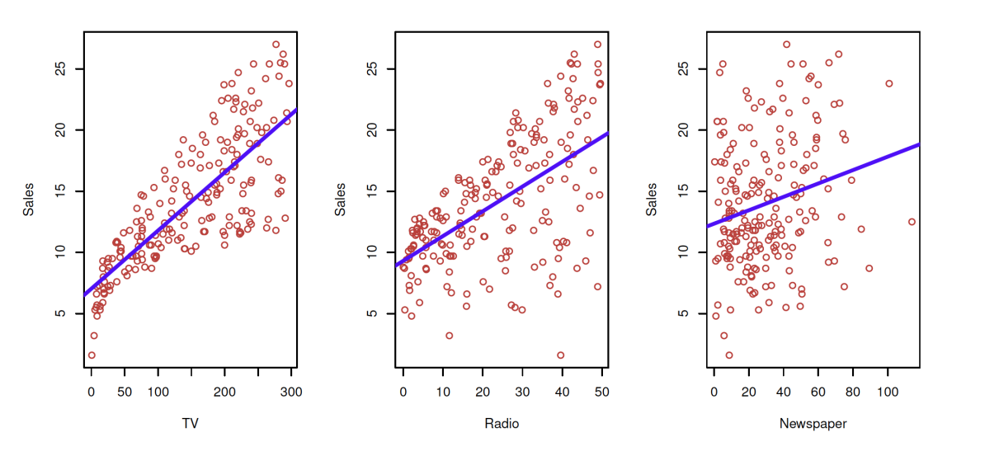
다시 그린 그림 · 누르면 원본Advertising 데이터는 TV, 라디오, 신문 광고에 쓴 예산과 그 결과 판매량sales을 기록한 데이터입니다. 오늘 주제는 회귀regression입니다.
그래프 읽기와 회귀가 하려는 일
세 그래프 모두 세로축은 판매량, 가로축은 각 매체 광고비입니다.
- TV — 점이 오른쪽 위로 뚜렷하게 올라감 → 관계가 강함
- Radio — 올라가지만 점이 더 퍼져 있음
- Newspaper — 점이 넓게 흩어짐 → 관계가 약해 보임
파란 직선은 각 매체 하나만으로 판매량을 설명한 단순 회귀 직선입니다.
저 동그라미들(데이터)을 가장 잘 설명할 수 있는 파란색 선을 찾고 싶은 것입니다. 실제로 우리가 알고 있는 것은 동그라미(데이터)뿐이고, 파란 선은 데이터로부터 찾아내야 합니다.
인공지능 ⊃ 기계학습 ⊃ 딥러닝 ⊃ 생성형 AI. 오늘 배우는 회귀는 이 중 기계학습의 지도 학습에 속합니다.
이 데이터로 던질 수 있는 질문 Questions from Data
| 질문 | English | 답하는 도구 |
|---|---|---|
| 광고비와 판매량 사이에 관계가 있는가? | Is there a relationship between advertising budget and sales? | 회귀계수, t·F 검정 |
| 그 관계는 얼마나 강한가? | How strong is the relationship …? | R² |
| 어떤 매체가 판매에 기여하는가? | Which media contribute to sales? | 다중 회귀 |
| 미래 판매를 얼마나 정확히 예측할 수 있는가? | How accurately can we predict future sales? | 신뢰구간 |
| 관계가 선형인가? | Is the relationship linear? | 다항 회귀 |
| 매체끼리 시너지(상승효과)가 있는가? | Is there synergy among the advertising media? | 수업에서 다루지 않음 |
이 질문들에 답하는 방법이 회귀 분석regression analysis입니다. 입력(광고비)과 출력(판매량)의 관계를 추정하고 예측합니다.
x → 모델 → y
x → system(model) → y
입력 x를 시스템(모델)에 넣으면 출력 y가 나옵니다.
같은 개념을 분야마다 다른 이름으로 부릅니다. 통계학은 "독립변수·종속변수", 기계학습은 "특징·레이블"을 주로 씁니다. 오른쪽 표의 왼쪽 열끼리, 오른쪽 열끼리는 모두 같은 대상입니다.
| 독립변수Independent variable x, xi, X, X | 종속변수Dependent variable y, yi, Y, Y |
|---|---|
| Input — 입력 | Output — 출력 |
| Feature — 특징 | Target — 타깃(목표값) |
| Attribute — 속성 | Label — 레이블 |
| Predictor — 예측변수 | Response — 반응변수 |
| Risk factor — 위험 요인 | Class — 클래스(범주) |
| Outcome — 결과 |
변수 표기법 — 스칼라, 벡터, 확률변수, 행렬
| 표기 | 모양 | 뜻 | 예 |
|---|---|---|---|
| x (y) | 소문자 | 스칼라 — 숫자 하나 | 어떤 한 지역의 TV 광고비 230.1 |
| xi (yi) | 굵은 소문자 | 벡터 — 숫자 여러 개의 묶음 | i번째 데이터의 (TV, Radio, Newspaper) |
| X (Y) | 대문자 | 확률변수 — 값이 확률적으로 정해지는 변수 | "광고비"라는 변수 자체 |
| X (Y) | 굵은 대문자 | 행렬 — 데이터 전체 | n개 데이터 × p개 특징의 표 |
무조건 지켜지지는 않지만 알고 있으면 좋습니다.
광고 데이터에서는 TV·Radio·Newspaper 광고비가 독립변수(predictor), Sales가 종속변수(response)입니다. "독립"은 우리가 주는 값, "종속"은 독립변수에 따라 정해지는 값입니다. 교안이 이후 Predictor, Response를 계속 씁니다.
회귀란 What is Regression?
선형 회귀 모델Linear Regression Model은 출력 변수 Y를 입력 변수 X들의 선형 결합linear combination으로 나타냅니다.
선형 결합은 여러 변수에 각각 계수를 곱한 뒤 더한 형태입니다. 예: 3×TV + 0.5×Radio + 7
- 변수 X와 Y의 관계를 수학식으로 설명한다
- 반응 변수 Y의 미래 값을 예측한다
회귀에는 선형 회귀와 로지스틱 회귀가 있습니다.
로지스틱은 Part 2(13–17)에서 다룹니다.
회귀의 분류 Category of Regression
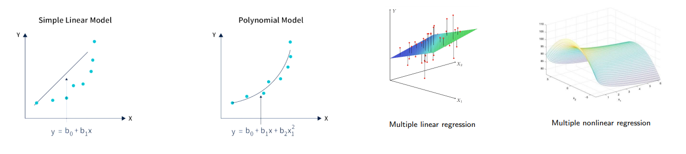
다시 그린 그림 · 누르면 원본| 선형 Linear | 비선형 Nonlinear | |
|---|---|---|
| 단순 회귀Simple — 독립변수 1개 | y = b0 + b1x (직선) | y = b0 + b1x + b2x2 (곡선, 다항 모델) |
| 다중 회귀Multiple — 독립변수 2개 이상 | 평면 (3차원에서) | 곡면 |
교안 그림의 다항 모델 식은 b2x12로 적혀 있지만 x2를 뜻하는 것으로 보입니다(확인 필요 1번).
수업은 선형만 — 선 → 면 → 초평면
비선형 회귀는 다루지 않습니다(훑어만 보고 넘어감). 수업에서는 선형(linear)만!
단순 회귀: 입력이 x 하나(스칼라)
다중 회귀: 입력이 x = [x1, x2, …, xN](벡터)
| 독립변수 | 공간 | 회귀가 맞추는 것 |
|---|---|---|
| 1개 (단순) | 2차원 (x, y) | 선 (직선) |
| 2개 (다중) | 3차원 (x₁, x₂, y) | 면 (평면) — 08 그림 |
| 3개 이상 (다중) | 4차원 이상 | 초평면hyperplane |
"3차원 이상부터 초평면"은 독립변수가 3개 이상이라 (x₁, x₂, x₃, y)처럼 공간이 4차원 이상인 경우입니다. 그림으로 그릴 수 없습니다.
헷갈리기 쉬운 지점 — 다항 모델은 왜 "선형 회귀"로도 부르나 보충
y = b0 + b1x + b2x2
이 식은 x에 대해서는 곡선(비선형)이지만, 계수 b₀, b₁, b₂에 대해서는 선형 결합입니다.
x²를 새 변수 x₂로 보면 y = b0 + b1x + b2x2라는 다중 선형 회귀와 같은 식이 됩니다.
그래서 다항 회귀는 선형 회귀와 같은 방법(최소제곱)으로 계수를 구합니다. 교안 분류표는 그래프 모양 기준으로 비선형 쪽에 두었습니다.
Variate는 y를, Variable은 x를 셉니다
"다중 회귀"를 영어로 multiple regression이라고 하는데, 비슷하게 생긴 multivariate와 자주 혼동됩니다.
노란 상자(출력 y)의 개수로 Variate를, 하늘색 상자(입력 x)의 개수로 Variable을 구분합니다.
그림 출처: soyounson.github.io/variate_variable
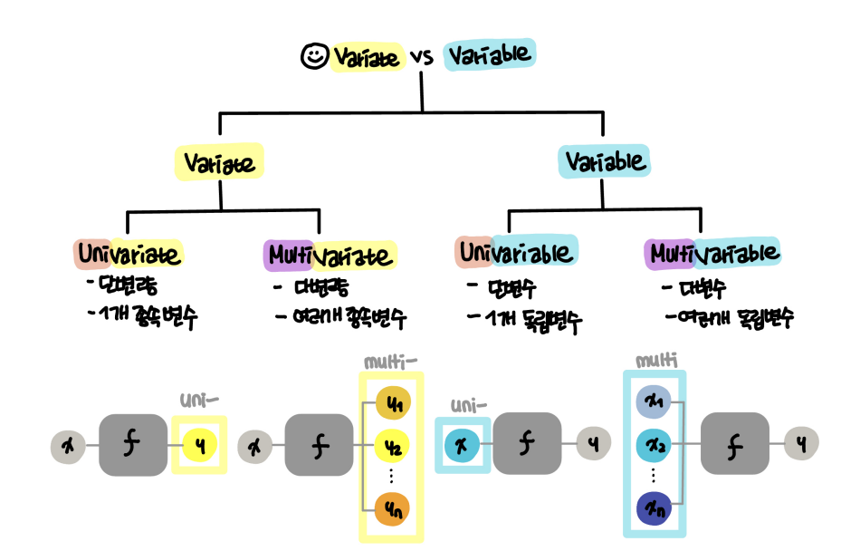
다시 그린 그림 · 누르면 원본네 용어 정리
| 용어 | 한국어 | 무엇의 개수 |
|---|---|---|
| Univariate | 단변량 | 종속변수(y) 1개 |
| Multivariate | 다변량 | 종속변수(y) 여러 개 |
| Univariable | 단변수 | 독립변수(x) 1개 |
| Multivariable | 다변수 | 독립변수(x) 여러 개 |
광고비 3개로 판매량 1개를 예측하는 다중 회귀는 multivariable(다변수)이지 multivariate가 아닙니다. Multivariate 회귀는 판매량과 고객 수처럼 y를 여러 개 동시에 예측하는 경우입니다.
우리는 variable 위주로 공부할 예정입니다.
즉 입력(x)의 개수에 따라 단변수 → 다변수로 넓혀 가고, 출력 y는 하나로 둡니다.
단순 선형 회귀 Simple Linear Regression
독립변수가 하나일 때, 즉 input 하나, output 하나일 때 다음 모델을 가정합니다.
Y = β0 + β1X + ε
| β0 | 절편intercept — X = 0일 때 Y의 값 |
| β1 | 기울기slope — X가 1 늘 때 Y가 변하는 양 |
| β0, β1 | 회귀계수coefficients = 파라미터parameters — 모르는 상수, 데이터로 추정 |
| ε | 오차항error term — 직선으로 설명되지 않는 나머지 |
중학교 때 배운 y = ax + b와 매치해서 생각해도 됩니다: β₁ = a(기울기), β₀ = b(절편). ε는 에러텀입니다.
β₀, β₁을 부르는 이름이 다양합니다: parameter, (learnable) parameter, weight(가중치). 모두 같은 것입니다.
무엇을 가지고 있고, 무엇을 찾나
우리가 가지고 있는 것은 데이터이고, 선형 회귀를 만들겠다는 것은 결국 β₀과 β₁을 찾겠다는 것입니다. X와 Y를 여러 개 보면서 찾습니다.
| 구분 | 무엇 |
|---|---|
| 가지고 있는 것 | 데이터 (x₁, y₁), (x₂, y₂), …, (xₙ, yₙ) |
| 찾는 것 (학습) | β₀, β₁ → 추정값 β̂₀, β̂₁ |
| 내는 것 | 새 x에 대한 예측값 ŷ = β̂₀ + β̂₁x |
필기의 "가진 건 데이터 X, Y는 학습 결과"는 첫 줄·셋째 줄로 정리했습니다. 학습할 때는 x와 y를 쌍으로 모두 가지고 있습니다(정리 방식은 추측이 섞여 있음).
실제 β₀, β₁은 모릅니다. 데이터로 구한 추정값이 있으면 이렇게 예측합니다.
ŷ = β̂0 + β̂1x
햇(hat, ^) 심볼은 예측하는 값입니다.
β₁은 진짜 기울기(모름), β̂₁은 데이터로 계산한 기울기 / y는 실제 값, ŷ는 모델이 예측한 값. 이 구분이 다음 섹션 "잔차"의 열쇠입니다.
"잘 맞는다"를 숫자로 — 잔차 제곱합
데이터에 가장 잘 맞는 직선, 즉 β̂₀과 β̂₁을 어떻게 고를까요? 먼저 "가장 잘 맞는다"를 숫자로 정의해야 합니다.
- i번째 데이터의 예측값: ŷi = β̂0 + β̂1xi
- 잔차Residual: ei = yi − ŷi — 실제 값과 예측값의 차이
- 잔차 제곱합Residual Sum of Squares, RSS:
RSS = e12 + e22 + ⋯ + en2
단순 선형 회귀에서 직접 식을 풀어서 구하는 것 정도만 해 봅니다.
경사하강법gradient descent도 하지만 그건 뒤쪽에서 다룹니다. 우리는 x, y를 가지고 있습니다.
RSS를 가장 작게 만드는 β̂₀, β̂₁ = 최소제곱법
RSS = (y1 − β̂0 − β̂1x1)2 + (y2 − β̂0 − β̂1x2)2 + ⋯ + (yn − β̂0 − β̂1xn)2잔차 ei에 예측식을 그대로 넣어 펼친 같은 식
RSS는 β̂₀, β̂₁을 무엇으로 고르느냐에 따라 값이 바뀌는 함수입니다. 이 값을 가장 작게 만드는 β̂₀, β̂₁을 찾는 방법이 최소제곱법least squares입니다.
교안: "Find estimator of β₀ and β₁ (i.e., β̂₀ and β̂₁)." 즉 이 단계의 목표는 진짜 계수의 추정값을 구하는 것입니다.
왜 제곱하나
잔차를 제곱해서 더하기도 하고, 절댓값으로 더하기도 하고, (제곱합에) 루트를 씌우기도 합니다. 공통점은 모두 양수로만 만든다는 것입니다.
이유: 오차가 +2인 점도 있고 −2인 점도 있을 수 있는데, 그대로 더하면 0이 되어 오차가 없는 것처럼 계산되어 버리기 때문입니다.
| 방법 | 식 | 보충 |
|---|---|---|
| 제곱해서 더하기 | ∑ ei2 | RSS — 최소제곱법. 미분이 쉬워 직접 풀이 가능 |
| 절댓값으로 더하기 | ∑ |ei| | 평균내면 MAE(평균절대오차). 큰 오차에 덜 민감 |
| 제곱합에 루트 | √(∑ ei2 / n) | RMSE. 단위가 y와 같아 해석이 쉬움 |
예: 잔차가 (+2, −2)이면 그냥 더하면 0, 제곱합은 8, 절댓값 합은 4. 앞의 0은 "완벽하다"는 틀린 결론을 줍니다.
예: 판매량을 TV 광고비에 회귀한 최소제곱 직선
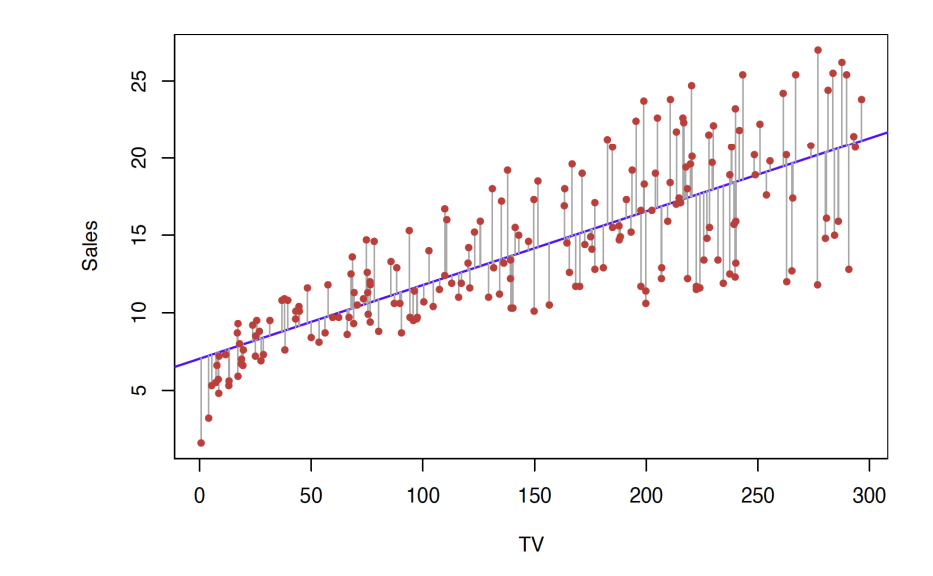
다시 그린 그림 · 누르면 원본예시 그래프에서 회색선은 에러텀(오차)을 의미합니다.
회귀는 어디까지나 최적·최선을 찾는 것입니다. 지금 데이터에 완벽하게 맞춰도, 새로운 데이터가 들어오면 100% 맞지 않을 수 있습니다.
엄밀히는 ε(진짜 직선에서 벗어난 양)과 잔차 eᵢ(추정한 직선에서 벗어난 양)는 다르지만, 잔차는 오차를 데이터로 추정한 값이라 같은 뜻으로 써도 됩니다. 뒷부분은 4주차의 일반화와 같은 이야기입니다.
최소제곱 추정 알고리즘 3단계 Least Squares Estimation Algorithm
- 오차 제곱합을 식으로 쓴다 ∑i=1n { yi − (β0 + β1xi) }2
- 이 값을 최소로 하는 β₀, β₁을 찾는 문제로 정의
C(β0, β1) = minβ0, β1 ∑i=1n { yi − (β0 + β1xi) }2 · (β̂0, β̂1) = arg minβ0, β1 C(β0, β1)
arg min = 최솟값 자체가 아니라, 최솟값을 만드는 변수 값 - 각 계수로 편미분해서 0으로 놓는다
∂C∂β0 = −2 ∑ (yi − (β0 + β1xi)) = 0 ∂C∂β1 = −2 ∑ (yi − (β0 + β1xi)) xi = 0
내가 줄이고자 하는 함수를 어떻게 정의할지에 따라 이름이 여러 가지입니다: 목적함수objective, 손실함수loss, 비용함수cost. 위 식의 C가 cost의 C입니다.
왜 미분해서 0으로 놓나 보충
C는 β₀, β₁에 대한 아래로 볼록한 2차 함수입니다. 그릇 모양이라 가장 낮은 지점에서는 기울기(미분값)가 0입니다.
그래서 "미분 = 0"인 지점을 풀면 최소점이 나옵니다. 1학기에 배운 "극솟값에서 미분 = 0"과 같은 원리입니다.
C는 변수가 β₀, β₁ 두 개인 함수입니다. 편미분partial derivative ∂C/∂β₀은 β₁을 상수로 고정하고 β₀으로만 미분한 것입니다.
예: C = (y − β₀ − β₁x)²이면 체인 규칙으로
∂C/∂β₀ = 2(y − β₀ − β₁x)·(−1) = −2(y − β₀ − β₁x)
∂C/∂β₁ = 2(y − β₀ − β₁x)·(−x) = −2(y − β₀ − β₁x)x
교안 3단계 식의 −2와 xᵢ가 여기서 나옵니다.
두 식을 연립해서 풀면 — 해 Solution
β̂1 = ∑(xi − x̄)(yi − ȳ)∑(xi − x̄)2 , β̂0 = ȳ − β̂1x̄
x̄ = 1n∑xi , ȳ = 1n∑yi 평균
β̂₀ = ȳ − β̂₁x̄를 다시 쓰면 ȳ = β̂₀ + β̂₁x̄. 즉 회귀직선은 항상 평균점 (x̄, ȳ)를 지납니다.
x̄(x바), ȳ(y바)는 평균을 의미합니다.
이 식을 직접 푸는 문제는 안 나올 것 같습니다. 그냥 "이런 식으로 푼다"까지는 이해가 필요합니다.
손으로 한 번 계산해 보기 보충 예제
점 3개 (1, 2), (2, 3), (3, 5) → x̄ = 2, ȳ = 10/3
- 분자 ∑(xᵢ − x̄)(yᵢ − ȳ) = (−1)(−4/3) + 0 + (1)(5/3) = 3
- 분모 ∑(xᵢ − x̄)² = 1 + 0 + 1 = 2 → β̂₁ = 1.5
- β̂₀ = 10/3 − 1.5 × 2 = 1/3 → ŷ = 0.333 + 1.5x
예측값 1.833, 3.333, 4.833
→ 잔차 0.167, −0.333, 0.167
→ 잔차의 합이 0입니다. 3단계 첫 번째 식(∂C/∂β₀ = 0)이 바로 "잔차의 합 = 0"이라는 조건입니다.
결정계수 R² Coefficient of Determination
직선을 구했으면 "이 직선이 데이터를 얼마나 잘 설명하는가"를 숫자로 알고 싶습니다.
- 회귀 모델이 데이터의 변동을 얼마나 잘 설명하는지 나타내는 척도
- y의 전체 분산 중 모델이 설명하는 비율
- 범위: 0 ≤ R² ≤ 1 (모델이 매우 나쁘면 음수가 나오기도 함)
R² = 1이면 잘 맞음, 0이면 못 맞춤
R2 = 1 − SSESST = SSRSST
SST = SSR + SSEy의 전체 변동을 둘로 나눔
변동의 분해 — SST = SSR + SSE
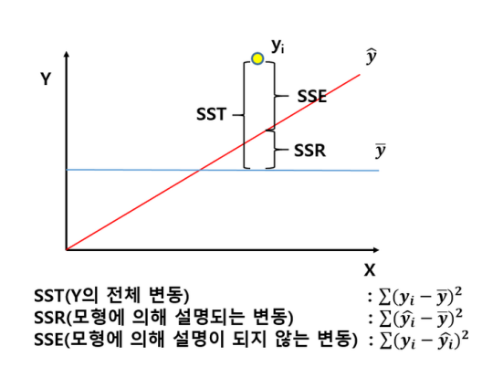
다시 그린 그림 · 누르면 원본| 기호 | 식 | 뜻 |
|---|---|---|
| SST Total | ∑(yi − ȳ)2 | Y의 전체 변동 |
| SSR Regression | ∑(ŷi − ȳ)2 | 모형에 의해 설명되는 변동 |
| SSE Error | ∑(yi − ŷi)2 | 모형으로 설명되지 않는 변동 (= RSS) |
그냥 평균 ȳ로 예측했을 때의 오차가 SST입니다. 회귀선을 쓰면 그중 SSR만큼이 설명되고 SSE만큼이 남습니다. 그래서 R² = SSR/SST는 "평균만 쓸 때보다 오차를 몇 % 줄였나"입니다. R² = 0.8이면 Y 변동의 80%를 X로 설명합니다.
06의 예제로 R² 계산하기
y = (2, 3, 5), ȳ = 10/3
- SST = (4/3)² + (1/3)² + (5/3)² = 42/9 ≈ 4.667
- SSE = 0.167² + 0.333² + 0.167² ≈ 0.167
- R² = 1 − 0.167 / 4.667 ≈ 0.964
평균만 쓸 때의 오차 중 96.4%를 직선이 줄였다는 뜻입니다.
최소제곱으로 구한 직선을 같은 데이터에 쓰면 SSE ≤ SST라서 R²는 0 이상입니다.
그런데 다른 방법으로 만든 모델이나 테스트 데이터에서 재면, 평균 ȳ로만 예측하는 것보다 오차가 더 클 수 있습니다(SSE > SST). 그러면 1 − SSE/SST가 음수가 됩니다. 교안의 "sometimes negative if the model is very poor"가 이 경우입니다.
다중 선형 회귀 Multiple Linear Regression
01의 그래프는 매체를 하나씩 따로 봤습니다. 하지만 실제 판매량은 세 매체가 함께 만든 결과입니다. 독립변수를 여러 개 한꺼번에 넣는 모델입니다.
Y = β0 + β1X1 + β2X2 + ⋯ + βpXp + ε
βⱼ는 다른 예측변수를 모두 고정했을 때, Xⱼ가 1 늘면 Y가 평균적으로 얼마나 변하는지를 뜻합니다.
We interpret βⱼ as the average effect on Y of a one unit increase in Xⱼ, holding all other predictors fixed.
광고 예제의 다중 회귀 모델
sales = β0 + β1 × TV + β2 × radio + β3 × newspaper + ε
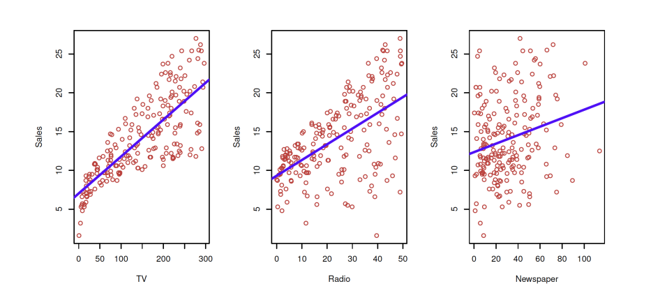
다시 그린 그림 · 누르면 원본세 그래프를 따로 보는 대신, 세 광고비를 한 식에 동시에 넣어 판매량을 설명합니다. 그래서 β₁은 "라디오·신문 광고비가 그대로일 때 TV 광고비가 1 늘면 판매량이 평균적으로 얼마나 변하나"입니다.
추정과 예측 Estimation and Prediction
추정값 β̂₀, β̂₁, …, β̂ₚ가 있으면 다음 식으로 예측합니다.
ŷ = β̂0 + β̂1x1 + β̂2x2 + ⋯ + β̂pxp
계수는 단순 회귀와 똑같이 잔차 제곱합을 최소로 하는 값으로 정합니다.
RSS = ∑(yi − ŷi)2 = ∑(yi − β̂0 − β̂1xi1 − β̂2xi2 − ⋯ − β̂pxip)2
xij는 i번째 데이터의 j번째 변수입니다(행 = 데이터, 열 = 변수). 데이터 전체를 n × p 행렬로 놓고 행렬 계산으로 한 번에 풉니다.
변수가 2개면 직선 대신 평면
독립변수가 2개면 입력 공간이 평면(X₁, X₂)이고 출력 Y가 높이가 되므로, 맞추는 대상이 직선이 아니라 평면입니다.
빨간 점은 실제 데이터, 검은 세로선은 잔차입니다. 이 선 길이의 제곱합이 최소가 되는 평면을 찾습니다.
변수가 3개 이상이면 그림으로 그릴 수 없는 초평면hyperplane이 됩니다(03의 선 → 면 → 초평면).
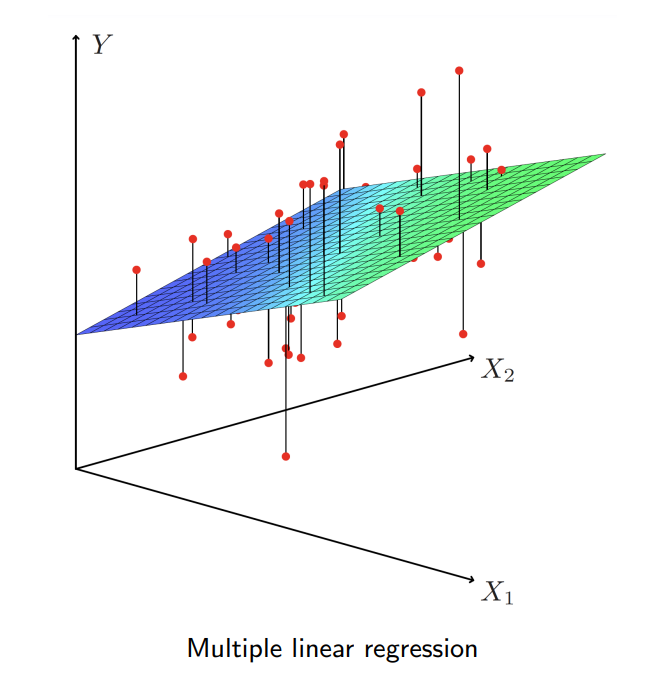
다시 그린 그림 · 누르면 원본수정된 결정계수 Adjusted R²
다중 회귀에서 R²를 그대로 쓰면 문제가 있습니다. 변수를 하나 더 넣으면, 쓸모없는 변수라도 R²는 내려가지 않습니다.
최소제곱은 새 변수의 계수를 0으로 두는 선택지도 가지고 있어서 SSE가 커질 수 없기 때문입니다. 그래서 변수를 마구 늘리면 모델이 좋아 보이는 착시가 생깁니다.
Adjusted R2 = 1 − SSE / (n − p − 1)SST / (n − 1)
n: 표본 크기sample size · p: 예측변수 개수number of predictors
- 조정 항 (n − 1)/(n − p − 1)이 예측변수 추가에 벌점penalizes
- 변수를 더 넣었을 때 적합도가 과대평가되는 것을 막음
숫자로 보면 벌점이 보입니다 보충
식 읽는 법: R²의 SSE/SST를 각각 자유도로 나눈 "평균" 버전입니다. p가 커지면 분모 n − p − 1이 작아져 SSE/(n − p − 1)이 커지므로, 변수를 넣어서 SSE가 그만큼 줄지 않으면 Adjusted R²는 오히려 떨어집니다.
| n = 20, SST = 100 | R² | Adjusted R² |
|---|---|---|
| 변수 2개, SSE = 30 | 0.700 | 1 − (30/17)/(100/19) ≈ 0.665 |
| 쓸모없는 변수 1개 추가, SSE = 29.8 | 0.702 ↑ | 1 − (29.8/16)/(100/19) ≈ 0.646 ↓ |
회귀계수 해석 Interpreting Regression Coefficients
예측변수끼리 상관이 없을 때
- 각 계수를 따로따로 추정하고 검정할 수 있음
- "Xⱼ가 1 변하면, 다른 변수가 그대로일 때 Y가 βⱼ만큼 변한다"는 해석이 가능
- 모든 계수의 분산이 커짐. 때로는 매우 크게 — 데이터가 조금만 달라져도 계수가 크게 바뀜
- 해석이 위험해짐 — Xⱼ가 변하면 다른 변수도 같이 변하기 때문
예로 보면 + 인과관계 주장은 피하라
TV 광고비를 늘리는 회사가 라디오 광고비도 같이 늘리는 경향이 있다면, 데이터에서 TV만 따로 늘어난 경우를 보기 어렵습니다. 그러면 "TV를 1 늘리고 라디오는 고정"이라는 상황 자체가 데이터에 거의 없어서 βTV를 믿기 어렵습니다.
예측변수끼리 강하게 상관된 상태를 다중공선성multicollinearity이라고 부릅니다(보충).
관찰 데이터observational data로는 인과관계를 주장하지 말아야 합니다. Claims of causality should be avoided for observational data.
회귀계수는 상관관계로 해석해야 합니다. 인과관계라고 단정 지으면 안 됩니다.
우리가 x → g(x) → y 형태를 배우고 있어서, x를 넣으면 y가 나오니까 "x가 y의 원인"이라고 생각하기 쉽습니다. 하지만 사실은 x와 y의 상관관계로 생각해야 합니다.
다항 회귀 Polynomial Regression
관계가 직선이 아니면 예측변수의 제곱 항 등을 새 변수로 추가합니다Non-linear effects of predictors.
- 회귀가 non-linear할 수도 있구나 정도
- degree 2, degree 5처럼 차수를 올리면 구불구불해질 수 있다 정도
- 이 이상은 심화 과정이라 다루지 않음
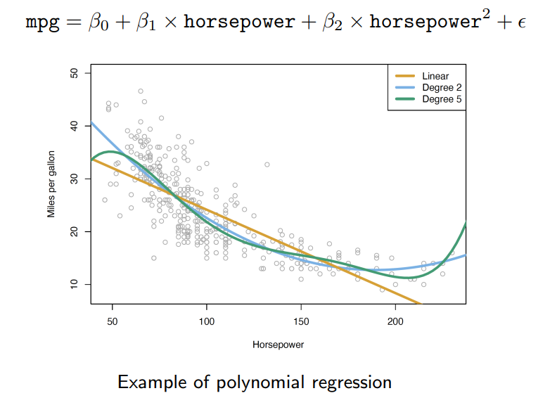
다시 그린 그림 · 누르면 원본세 곡선 비교 — 연비(mpg)를 마력(horsepower)으로
mpg = β0 + β1 × horsepower + β2 × horsepower2 + ε
| 모델 | 모양 | 평가 (보충) |
|---|---|---|
| Linear (1차, 주황) | 직선 | 휘어진 추세를 따라가지 못함 — 과소적합 |
| Degree 2 (2차, 하늘색) | 아래로 볼록한 완만한 곡선 | 데이터 추세를 잘 따라감 |
| Degree 5 (5차, 초록) | 구불구불, 끝에서 꺾임 | 데이터가 적은 양 끝에서 불필요하게 휨 — 과적합 경향 |
차수를 올릴수록 훈련 데이터에는 더 잘 맞지만, 데이터가 드문 곳에서 엉뚱한 값을 냅니다.
회귀에서 중요한 질문 4가지 Important Questions in Regression
| # | 질문 | 도구 |
|---|---|---|
| 1 | 예측변수 X₁, …, Xₚ 중 적어도 하나는 반응 예측에 쓸모가 있는가? | 개별 계수: t-검정 모델 전체: F-검정 |
| 2 | 모든 예측변수가 필요한가, 일부만 쓸모 있는가? | 전진·후진 선택Forward/Backward |
| 3 | 모델이 데이터에 얼마나 잘 맞는가? | R², Adjusted R² |
| 4 | 주어진 예측변수 값에서 반응을 얼마로 예측하고, 그 예측은 얼마나 정확한가? | 신뢰구간Confidence interval |
t-검정: 계수 하나가 0인지(그 변수가 효과가 없는지) · F-검정: 모든 계수가 동시에 0인지(모델 전체가 쓸모없는지) · 전진 선택: 변수 없이 시작해 가장 도움 되는 변수를 하나씩 추가 · 후진 선택: 모두 넣고 가장 쓸모없는 변수를 하나씩 제거 · 신뢰구간: 예측값을 "95% 확률로 이 범위 안"처럼 구간으로
Part 1 정리
선형 회귀 — 숫자를 예측
- x → model → y. 데이터(점)만 가지고 β₀(절편), β₁(기울기)을 찾는 것이 선형 회귀. 모자(^) = 추정·예측값.
- 잔차 eᵢ = yᵢ − ŷᵢ. +와 −가 상쇄되지 않게 제곱해서 더한 RSS를 최소로 → 최소제곱법(편미분 = 0으로 풀이).
- β̂₁ = ∑(x−x̄)(y−ȳ)/∑(x−x̄)², β̂₀ = ȳ − β̂₁x̄ — 직접 푸는 문제는 안 나올 것, 흐름은 이해.
- R² = 1 − SSE/SST = SSR/SST. 변수가 많으면 Adjusted R²로 벌점.
- 다중 회귀: 선 → 면 → 초평면. 계수는 상관관계로 해석(인과 단정 금지). 다항 회귀는 "구불구불해질 수 있다"까지.
로지스틱 회귀 Logistic Regression
이번에는 y가 Yes/No입니다
지금까지 Y는 숫자(판매량, 연비)였습니다. 이번에는 카드 사용자가 채무불이행default을 할지 예측하는 Default 데이터입니다.
Y = 0 (No) , 1 (Yes)
파란 ○ = No(불이행 안 함), 주황 + = Yes. Yes는 Balance(카드 잔액)가 큰 오른쪽에 몰려 있습니다. 상자그림을 보면 Balance는 두 그룹 차이가 크고, Income은 차이가 거의 없습니다.
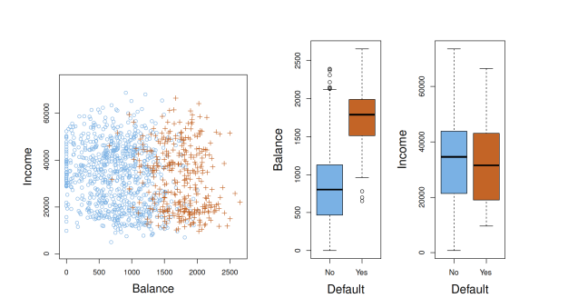
다시 그린 그림 · 누르면 원본그냥 선형 회귀 후 Ŷ > 0.5면 Yes로 하면 안 될까?
Y가 0 또는 1이면 Y의 평균(기대값)이 곧 "Y = 1일 확률"입니다.
E(Y | X = x) = Pr(Y = 1 | X = x)
평균을 예측하는 회귀가 확률을 예측하는 셈이 됩니다.
E(Y | X = x): X = x일 때 Y의 기대값 · Pr(Y = 1 | X = x): X = x일 때 Y = 1일 조건부 확률
선형 회귀는 직선이라서 0보다 작거나 1보다 큰 "확률"을 낼 수 있습니다.
확률은 반드시 0~1 사이여야 하므로 말이 안 됩니다.
→ 로지스틱 회귀가 더 적절합니다.
선형 회귀 vs 로지스틱 회귀 Linear vs. Logistic Regression
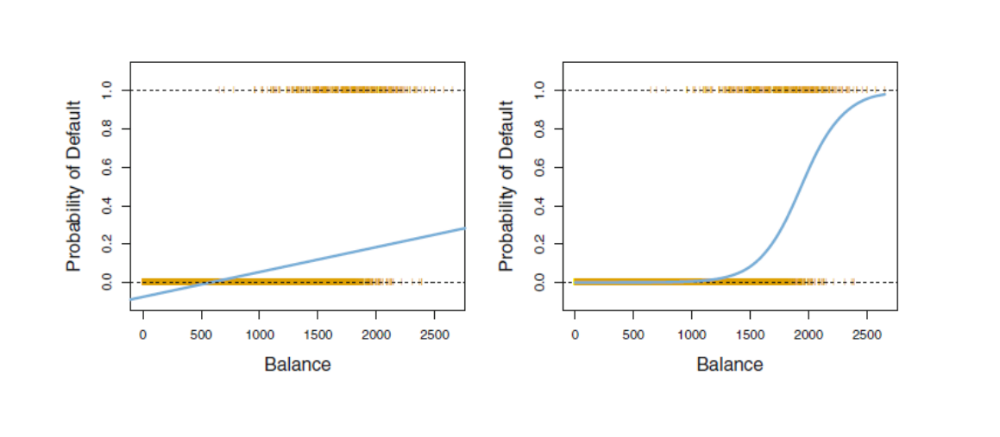
다시 그린 그림 · 누르면 원본| 선형 회귀 (왼쪽) | 로지스틱 회귀 (오른쪽) | |
|---|---|---|
| 모양 | 직선 | S자 곡선 |
| 출력 범위 | 제한 없음 — Balance가 작으면 음수 | 항상 0 ~ 1 |
| 데이터 적합 | Balance가 커도 0.25 정도에 그침 | 1500~2000에서 급격히 올라 1에 가까워짐 |
직선을 시그모이드에 넣는다
p(X) = Pr(Y = 1 | X)로 줄여 쓰고, balance로 default를 예측합니다. 로지스틱 회귀는 다음 형태를 씁니다.
p(X) = eβ0 + β1X1 + eβ0 + β1X = 11 + e−(β0 + β1X)
p(X)는 항상 0과 1 사이입니다. 두 번째 식은 첫 번째 식의 분자·분모를 eβ₀+β₁X로 나눈 것입니다.
구조 읽기: 괄호 안 β₀ + β₁X는 선형 회귀와 똑같은 직선입니다. 그 직선 값을 시그모이드 함수에 넣어서 0~1 사이로 눌러 준 것이 로지스틱 회귀입니다.
시그모이드 함수 Sigmoid Function
φ(z) = 11 + e−z
- z = 0에서 정확히 0.5
- z가 커지면 1에, 작아지면 0에 가까워짐
- 어떤 실수든 0~1로 바꿔 줌
로지스틱 회귀에서는 z 자리에 직선 β₀ + β₁X가 들어갑니다.
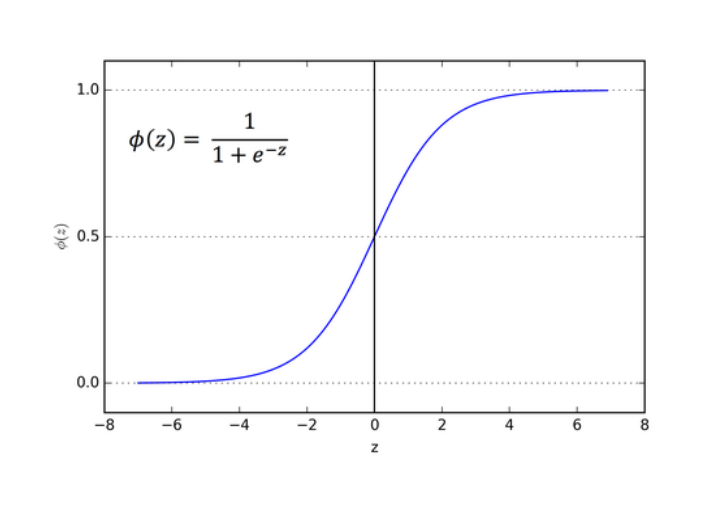
다시 그린 그림 · 누르면 원본로그 오즈 log odds · logit 변환
식을 조금 정리하면:
log ( p(X)1 − p(X) ) = β0 + β1X
이 변환을 p(X)의 로그 오즈 또는 로짓 변환이라 합니다.
즉 로지스틱 회귀는 "로그 오즈가 X에 대해 선형"이라고 가정한 모델입니다. β₁은 X가 1 늘 때 로그 오즈가 늘어나는 양입니다.
p(x)는 y가 1일 확률,
1 − p(x)는 y가 0일 확률입니다.
그래서 p(x) / (1 − p(x))는 "y = 1일 확률 ÷ y = 0일 확률"입니다. Default 예제로 읽으면 "채무불이행(Yes)일 확률 ÷ 아닐(No) 확률"입니다.
오즈와 로그 오즈를 숫자로 보기
| p(x) = P(y=1) | 1 − p(x) | 오즈 p/(1−p) | 로그 오즈 | 뜻 |
|---|---|---|---|---|
| 0.5 | 0.5 | 1 | 0 | 1과 0이 반반 |
| 0.8 | 0.2 | 4 | ≈ 1.39 (양수) | 1일 가능성이 0의 4배 |
| 0.2 | 0.8 | 0.25 | ≈ −1.39 (음수) | 0일 가능성이 1의 4배 |
로그 오즈가 0이면 p = 0.5, 양수면 p > 0.5(1 쪽), 음수면 p < 0.5(0 쪽). 17의 "0.5 기준 분류"는 결국 "β₀ + β₁X가 0보다 큰가"와 같은 말입니다.
오즈odds = p / (1 − p): 일어날 확률 ÷ 일어나지 않을 확률.
확률 p는 0~1, 오즈는 0~∞, 로그 오즈는 −∞~+∞입니다. 그래서 범위 제한이 없는 직선과 같다고 놓을 수 있습니다.
변형(보충): z = β₀ + β₁X로 두면 p = eᶻ/(1 + eᶻ), 1 − p = 1/(1 + eᶻ) → p/(1 − p) = eᶻ → 양변에 자연로그 → log(p/(1 − p)) = z
최대우도 Maximum Likelihood
선형 회귀의 계수는 RSS 최소로 구했는데, 로지스틱 회귀의 계수는 최대우도로 구합니다.
ℓ(β0, β1) = ∏i: yi=1 p(xi) ∏i: yi=0 (1 − p(xi))
∏는 모두 곱하라는 기호입니다. 실제로 Yes였던 사람(yᵢ = 1)에게는 모델이 준 Yes 확률 p(xᵢ)를, No였던 사람에게는 No 확률 1 − p(xᵢ)를 곱합니다. 이 곱 ℓ이 우도likelihood — "현재 계수라면 실제로 관찰된 결과가 나올 확률"입니다.
모델 1: p(A) = 0.9, p(B) = 0.2
ℓ = 0.9 × 0.8 = 0.72
모델 2: p(A) = 0.6, p(B) = 0.5
ℓ = 0.6 × 0.5 = 0.30
실제 결과를 더 잘 설명하는 모델 1의 우도가 더 큽니다. 이 값을 최대로 만드는 β₀, β₁을 고릅니다.
추정된 계수로 확률 계산하기
Default 데이터에서 추정된 계수: β̂0 = −10.6513, β̂1 = 0.0055
Balance $1000의 채무불이행 확률은?
p̂(X) = e−10.6513 + 0.0055 × 10001 + e−10.6513 + 0.0055 × 1000 = 0.006
지수 −5.1513 → e⁻⁵·¹⁵¹³ ≈ 0.00579 → 0.00579 / 1.00579 ≈ 0.006 (0.6%)
Balance $2000이면?
p̂(X) = e−10.6513 + 0.0055 × 20001 + e−10.6513 + 0.0055 × 2000 = 0.586
지수 0.3487 → e⁰·³⁴⁸⁷ ≈ 1.417 → 1.417 / 2.417 ≈ 0.586 (58.6%)
잔액이 두 배가 됐는데 확률은 0.6% → 58.6%로 약 100배 뛰었습니다. 확률이 직선이 아니라 S자로 변하기 때문입니다(14의 1500~2000 구간).
로지스틱 회귀로 분류하기 Logistic Regression for Classification
핵심: 로지스틱 회귀는 확률 p̂(X) = P(Y = 1 | X)를 출력합니다. 분류하려면 확률에 기준선을 정합니다.
예측 Y = 1 (Yes, Default) p̂(X) > 0.5
예측 Y = 0 (No, Non-default) p̂(X) ≤ 0.5
| Balance | p̂(X) | 0.5와 비교 | 예측 |
|---|---|---|---|
| 1000 | 0.006 | ≤ 0.5 | No Default |
| 2000 | 0.586 | > 0.5 | Default |
로지스틱 회귀는 확률을 추정하는 데서 끝나지 않고, 분류 결정까지 내립니다.
4주차 2차시 지도 학습 알고리즘 표에서 "로지스틱 회귀는 이름과 달리 분류"라고 했던 이유입니다. 내부에서 확률(연속값)을 회귀로 구해서 이름에 "회귀"가 붙고, 최종 출력은 클래스입니다.
보충: p̂ = 0.5가 되는 경계는 β̂₀ + β̂₁X = 0, 즉 X = 10.6513 / 0.0055 ≈ 1937. 기준 0.5는 바꿀 수 있습니다(채무불이행을 놓치는 게 더 위험하면 0.2처럼 낮춤).
선형 회귀 vs 로지스틱 회귀 한 장 비교
| 선형 회귀 | 로지스틱 회귀 | |
|---|---|---|
| y의 종류 | 숫자 (판매량 등) | 0 / 1 (Yes / No) |
| 출력 | ŷ = β̂0 + β̂1x (범위 제한 없음) | p̂(X) = 1 / (1 + e−(β̂0+β̂1X)) (0~1 확률) |
| 직선이 있는 곳 | 출력 그 자체 | 로그 오즈 log(p/(1−p)) |
| 계수 찾는 기준 | RSS 최소 (최소제곱) | 우도 최대 (최대우도) |
| 평가·결정 | R², Adjusted R² | 0.5 기준으로 분류 |
| 과제 종류 | 회귀 | 분류 (이름만 회귀) |
용어 정리 ① — 선형 회귀
| 독립변수 · 종속변수 | 입력 x(특징, 예측변수) / 출력 y(반응변수, 목표). x → model → y. |
| 회귀계수coefficient | β₀, β₁. 데이터로 찾아야 하는 값. 파라미터·learnable parameter·가중치로도 부름. |
| 추정값 (햇) | ŷ, β̂. 모자(^)는 데이터에서 추정·예측한 값이라는 표시. |
| 잔차 · 에러텀 | eᵢ = yᵢ − ŷᵢ (실제 − 예측). ε는 모델로 설명 못 하는 오차. |
| 잔차 제곱합 RSS (= SSE) | ∑(yᵢ − ŷᵢ)². 부호 상쇄를 막으려고 제곱. 선형 회귀는 이것을 최소화. |
| 목적·손실·비용함수 | 줄이고자 하는 함수의 여러 이름(objective · loss · cost). 오늘은 RSS. |
| 최소제곱법least squares | RSS를 최소로 하는 계수를 미분 = 0으로 직접 풀어 구하는 방법. |
용어 정리 ② — 평가와 로지스틱 회귀
| 결정계수 R² | 1 − SSE/SST = SSR/SST. y 변동 중 모델이 설명하는 비율. |
| 수정된 결정계수 | 변수 개수 p로 벌점을 준 R². 쓸모없는 변수를 넣으면 내려간다. |
| 다변수 · 다변량 | multivariable: 입력 x가 여러 개 / multivariate: 출력 y가 여러 개. 수업은 variable 위주. |
| 초평면hyperplane | 입력이 3개 이상일 때 회귀가 맞추는 대상. 선 → 면 → 초평면. |
| 시그모이드sigmoid | 1 / (1 + e⁻ᶻ). 어떤 실수든 0~1로 바꾼다. z = 0이면 0.5. |
| 오즈 · 로그 오즈 | p/(1−p) = P(y=1)/P(y=0). 로그 오즈 = log(p/(1−p)) = β₀ + β₁X. |
| 최대우도 추정 | 관찰된 결과가 나올 확률(우도)을 최대로 하는 계수를 고르는 방법. |
확인 필요
현재 남은 질문은 없습니다.
1. 교안 5쪽 다항 모델 식 y = b0 + b1x + b2x12 → b2x2
첨자 1은 오타로 보입니다(추측). 수업에서 다르게 설명하셨으면 알려 주세요.
예상 문제 안내
교수님이 "푸는 문제는 안 나올 것 같다"고 하셔서, 계산보다는 개념·흐름을 묻는 문제 위주로 만들었습니다.
문제는 예상이며 실제 출제와 다를 수 있습니다. 정답 칸을 눌러야 답이 보입니다.
- Univariable
- Multivariable
- Multivariate
- Univariate이면서 Multivariate
교안에 자주 나오는 단어 ①
| regression /rɪˈɡreʃn/ n. | 회귀 — 입력과 출력의 관계를 식으로 추정해 숫자를 예측하는 방법 We use linear regression to predict sales. 판매량을 예측하려고 선형 회귀를 쓴다. |
| coefficient /ˌkoʊɪˈfɪʃnt/ n. | 회귀계수, 계수 — 변수 앞에 곱해지는 수 (β₀, β₁) The coefficient of TV is 0.05. TV의 회귀계수는 0.05이다. |
| intercept /ˈɪntərsept/ n. | 절편 — x = 0일 때 y의 값 (β₀) The line has an intercept of 7. 이 직선의 절편은 7이다. |
| slope /sloʊp/ n. | 기울기 — x가 1 늘 때 y가 변하는 양 (β₁) A positive slope means y goes up with x. 기울기가 양수면 x가 커질 때 y도 커진다. |
교안에 자주 나오는 단어 ②
| residual /rɪˈzɪdʒuəl/ n. | 잔차 — 실제값에서 예측값을 뺀 나머지 (yᵢ − ŷᵢ) We square each residual and add them. 각 잔차를 제곱해서 더한다. |
| estimate v. /ˈestɪmeɪt/ · n. /ˈestɪmət/ | 추정하다, 추정값 — 데이터로 모르는 값을 계산해 내다 (햇 ^ 표시) We estimate β₀ and β₁ from the data. 데이터로 β₀와 β₁을 추정한다. |
| odds /ɑːdz/ n. (복수형) | 오즈 — 일어날 확률 ÷ 일어나지 않을 확률, p / (1 − p) If p is 0.8, the odds are 4. p가 0.8이면 오즈는 4이다. |
| likelihood /ˈlaɪklihʊd/ n. | 우도, 가능성 — 현재 계수로 실제 관찰된 결과가 나올 확률 We choose β to maximize the likelihood. 우도를 최대로 만드는 β를 고른다. |
필기 원문 ① — 수업 중 보내주신 그대로
| 01 14:07 | 이거 오늘 수업 내용이야. 6-1 수업이고 10월 8일 목요일(5-2는 휴강. 개천절 대체휴일 휴강) |
| 02 15:18 | 인공지능 (포함기호) 기계학습(ML) (포함기호) 딥러닝(DL) (포함기호)생성형AI 회기에는 선형회귀와 로지스틱 회기가 있음 저 동그라미들을 가장 잘 설명할 수 있는 파란색 선을 찾고 싶은거임(실제로 우리가 알고 있는건 그저 동그라미(데이터)들 뿐 (참고로 비선형은 수업에서 다루지 않을거임) 매체끼리 시너지 어떻게 하는지는 다루지는 않음(그냥 이런 질문을 던질 수 있다 정도) 용어정리 x → system(model) → y 이런 형식임 변수 표기법 순서대로 각각 스칼라 백터 확률변수 행렬 이다.(무조건 지켜지지는 않지만 알고는 있어야 좋음) feature 특성 말고 특징으로 하자 그리고 보낸 사진 보고 다시 재구성해줘.(4섹션) |
| 03 15:25 | 3 . 회귀란 회구의 분류 쪽 필기 이어갈게 coefficients는 회귀계수로 번역해줘 왼쪽 네비게이션 닫을 수 있는 버튼도 추가하자(분할화면 쓸 때 차지가 커서 불편) 단순 회귀는 x 다중 회귀는 x = [x_1, x_2, ..., x_N] 비선형회귀는 다루지 않음(훑어만 보고 넘어감) 수업에서는 linear만! 선 → 면 → 초평면(3차원 이상부터) 이렇게 되는거임 |
필기 원문 ② — 04 15:41
필기 원문 ③
| 05 15:56 | 예시 그래프에서 회색선은 에러텀을 의미 (어디까지 최적 최선을 찾는거임. 완벽하게 해도 새로운 데이터가 들어온다면 그게 100% 맞지 않을 수도 있음) 섹션별로 교안 상 몇페이지인지 써주면 내가 수업 가기 따라가기에 되게 좋을거같아. 참고로 이번 수업은 27페이지까지 있고 회귀계수 해석은 19페이지에 해당돼 |
| 06 16:07 | 회기계수 해석에서 상관관계로 해야함(인과관계라고 단정지으면 안된다고 함) 우리가 x----g(x)---→y 를 배우고 있는데 y가 나오니까 인과간계라고 생각하지만 사실은 x,y 상관관계로 생각해야함 11다항회귀 Non-linear 할 수도 있구나 정도. degree 2, degree 5 이렇게 되면 구불구불해질 수 있다 정도 알고있기(이 이상은 심화과정이라 안다룸) 그래서 이 페이지에서는 그냥 잠깐 다뤄본 정도. 편하게 들으라고 하심 |
| 07 16:14 | 로그 오즈에서 p(x)는 y가 1일 확률 1 - p(x)는 y가 0일 확률 수업 끝. 이해하기 쉽게 정리해줘. 진짜 내가 잘 못하는 분야라서 선생님이 말해주듯이 정리가 필요해 |